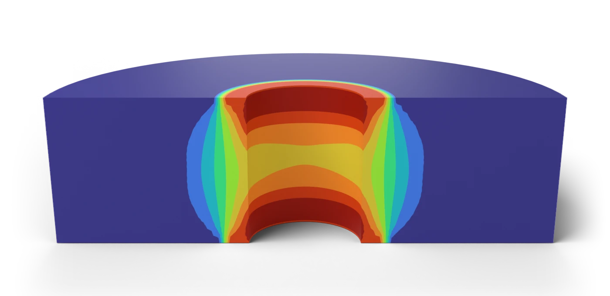
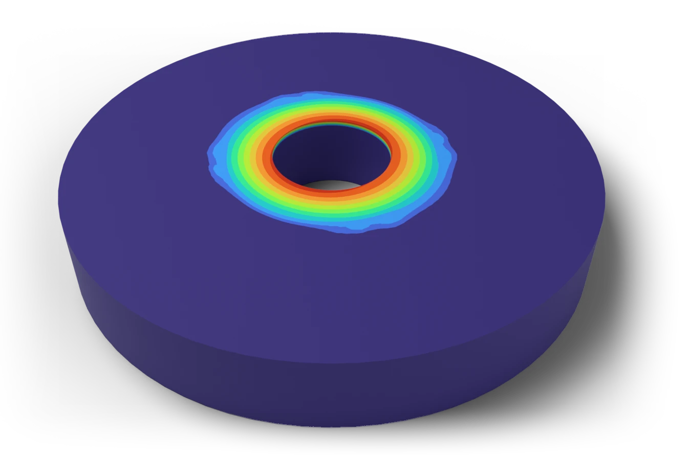
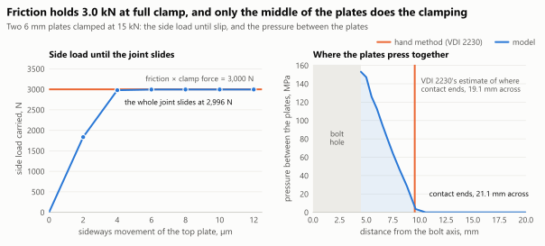

The Question
Two 6 mm steel plates are clamped by an M8 class 8.8 bolt tightened to 15 kN. The joint has to carry a 2 kN side load by friction alone, with a safety factor of 1.25 against slip, so 2.5 kN. It also mustn't open under a 10 kN axial load. Both have to hold after the joint settles. Does it, and if not, what fixes it?
The Answer
No, narrowly. Clamped at 15 kN the interface carries 3.0 kN of friction, but settling (9.5 µm of embedding) costs 3.03 kN of clamp force. That leaves 11.97 kN and a slip load of 2.39 kN, 4.4 % short.
A preload of about 15.6 kN fixes it, keeping 12.5 kN after settling and loading the bolt to 71 % of its proof stress. The joint doesn't open below 13.1 kN.
Drag the slider in the viewer at the top of the page to push the top plate sideways. The stuck region shrinks from the outside in until the whole joint slides.
The Model
- Parts
- Two round steel plates, 40 mm across and 6 mm thick, with a 9 mm hole for an M8 bolt. Half the joint is modelled, cut along the direction of the side load.
- Material
- Steel, linear elastic: Young's modulus 210 GPa, Poisson's ratio 0.3.
- The bolt
- Represented by its clamp force: 15 kN as pressure on the 13 mm washer areas under the head and nut. The shank and threads aren't modelled; their stiffness comes from the VDI 2230 hand method.
- Contact
- Between the plates, with Coulomb friction, coefficient 0.2 (dry machined steel).
- Loading
- Step 1 clamps the joint. Step 2 pushes the top plate sideways until the whole interface slides.
- Settling
- 9.5 µm of embedding, from VDI 2230's table for smooth machined surfaces.
- Mesh
- Structured hexahedral elements of 1.0, 0.75 and 0.5 mm.
- Analysis
- Nonlinear static with friction contact, in CalculiX 2.22, combined with the VDI 2230 joint diagram.
The case file: recorded assumptions, limits and inputs
This is the study's own record, written before the run and saved with it, in the shorthand of the case file.
cases/bolted_joint_mesh_r1.toml ↗
Two 6 mm steel plates clamped by an M8 8.8 bolt at 15 kN, friction 0.2: CalculiX half model with penalty friction contact, clamp then side displacement to gross slip; joint diagram with VDI 2230 bolt compliance and embedding; element size 1.0 / 0.75 / 0.5 mm; each point also solved with the plates 100 times stiffer to extrapolate the slip load to a rigid interface.
Assumptions, and How Each Is Checked
- The bolt acts through its clamp force: uniform pressure on the washer annuli (head and nut bearing areas); its shank is not modelled and must not touch the hole (checked: slip displacement below the 0.5 mm clearance).
- Coulomb friction, mu = 0.2 at the plate interface (dry machined steel): synthetic.
- Clamped region represented by circular plates of 40 mm diameter (the VDI substitute body; checked: the pressure cone fits inside).
- Embedding (settling) 9.5 um: VDI 2230 Table 5 for Rz < 10 um, axial load (thread 3, head 2.5, nut 2.5, one interface 1.5): synthetic surface finish.
- Axial load introduced at mid-thickness of the plates (load introduction factor n = 0.5): synthetic.
- Linear elastic steel, small displacement.
Limits
- No tightening torque scatter (VDI alpha_A): the 15 kN is the minimum preload assumed after tightening.
- Bolt compliance, embedding and the load factor come from VDI 2230 (hand method), not from a modelled bolt.
- Slip under a static side load only; no cyclic loading, fretting or self-loosening.
- No physical test data.
Inputs
| Input | Value |
|---|---|
| plate_outer_diameter_mm | 40 |
| hole_diameter_mm | 9 |
| washer_diameter_mm | 13 |
| top_thickness_mm | 6 |
| bottom_thickness_mm | 6 |
| youngs_modulus_MPa | 210000 |
| poisson_ratio | 0.3 |
| preload_N | 15000 |
| friction_coefficient | 0.2 |
| element_size_mm | 1 |
| contact_stiffness_factor | 50 |
| stick_slope_factor | 50 |
| slip_displacement_mm | 0.012 |
| slip_increments | 6 |
| bolt_thread | M8 |
| bolt_shank_length_mm | 8 |
| bolt_free_thread_length_mm | 4 |
| bolt_proof_stress_MPa | 600 |
| embedding_um | 9.5 |
| load_introduction_factor | 0.5 |
Why It Matters
Most bolted joints aren't meant to carry side load on the bolt itself. The bolt clamps the plates together, and friction between them carries the load. If the plates slip, the bolt ends up in shear and bending, the joint shifts every load cycle, and it works loose. So the design question is whether friction can hold the load with a margin.
The catch is that a joint loses clamp force after it's tightened. The rough surfaces under the head, the nut and between the plates flatten by a few thousandths of a millimetre (embedding), and because a short bolt is stiff, that small loss of stretch costs a lot of force. A joint that passes when it is tightened can fail once it has settled. This one does.
How It Works
The finite-element model measures what a hand calculation can only estimate: how stiff the plates are under the clamp, where they actually touch, and how much friction the interface carries before it slides. The VDI 2230 joint diagram, the standard method for bolted joints, then combines those with the bolt's own stiffness and the settling loss to give the two design loads: the side load at which it slips and the axial load at which it opens.


How I Checked It
- The friction is exact where the reference is exact. For a rigid, flat interface the slip load is simply the friction coefficient times the clamp force. Each mesh is solved twice, at the real stiffness and with the plates 100 times stiffer. Extrapolating to a rigid interface recovers that product to 1 × 10⁻⁷ or better.
- Equilibrium. The clamp forces balance and the side forces on the two plates cancel, to round-off.
- Against VDI 2230's pressure cone. That's an approximation, so close agreement isn't expected: plate compliance within 18 % and contact diameter within 11 % at the finest mesh.
- Mesh refinement. At 1.0, 0.75 and 0.5 mm it leaves 0.01 % uncertainty on the slip load and 0.035 % on the opening load.
- The assumptions hold. The bolt stays within its proof stress, and the plates slide less than the hole clearance, so the shank never touches the hole.

What I Caught Along the Way
- A small miss that turned out to be physics. The slip load came out 0.13 % under friction coefficient times clamp force on every mesh, against a 0.1 % tolerance. The friction law, the applied load and the solver's friction all checked out exactly. The decisive test was making the plates stiffer: the shortfall fell exactly in proportion, 1.3 × 10⁻³, then 10⁻⁴, then 10⁻⁵. CalculiX works on the deformed surfaces, and under the side load the interface tilts by about the strain, while the hand formula assumes a rigid, flat interface. So the exact check now uses the rigid-limit extrapolation. Raising the tolerance would have hidden all of this.
- A stall that wasn't about size. One mesh level stalled for four hours while a finer one finished in 22 minutes. It was a convergence stall on that mesh, not cost, and another level replaced it.
Limits, and What I'd Do Next
- The friction coefficient (0.2) and the embedding (9.5 µm) are assumed values, and they dominate the answer: ±20 % on friction moves the slip load by the same 20 %. On a real joint I'd want both measured, or a larger margin.
- The 15 kN is taken as the minimum preload after tightening. Scatter in tightening torque isn't included.
- A static side load only. No cyclic loading, fretting or self-loosening.
- The bolt's shank and threads aren't modelled, and there's no test data.
Evidence
Run reports, with every check and the saved inputs